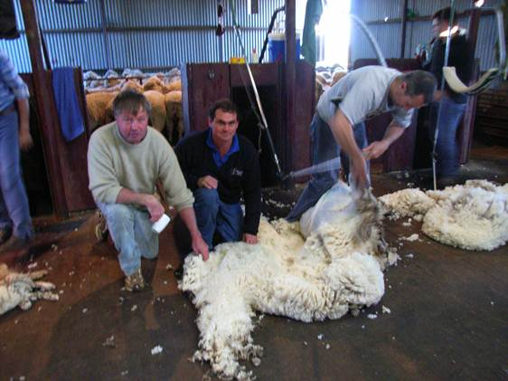

A key factor that sets Prime Super apart from other super funds is our personal approach. I’m Radek Kotlarczyk, your local Regional Manager. With 10 years’ experience in the area, I’m travelling the length and breadth of WA talking super, helping employers and members make the most of their super.
Contact me for a catch up- Super made simple
-
Super is constantly changing. Keeping up with your legal obligations can be a battle. We know that your time can be better spent focusing on other things. Our Regional Managers provide one-on-one support to help you navigate through the confusion.

We’re an ideal default fund
Prime Super is a complying regulated super fund and satisfies all regulatory obligations and member choice requirements. We are a not-for-profit industry super fund and offer an APRA-approved MySuper product, making us an ideal default fund for employers.
We do not charge you to become a participating employer and there are no on-going fees associated with your membership.
Solutions to suit you
Whether you have two or 200 employees, we can offer you a solution.
Prime Super offers you a range of payment options including BPAY, EFT, direct debit and cheque. All you have to do is pick the option that best suits your needs*.
You can manage all of your super obligations online using our secure online facility, EmployerOnline.
* As a result of legislative change payment by cheque will not be available to some employers from 1 July 2015.Clearing house services
If your employees have choice of fund and you’re paying super into multiple super funds, you may wish you use our clearing house service. The clearing house service is offered at no extra cost to employers who use Prime Super as their default fund and to all employers with fewer than 20 employees.
The Prime Super clearing house service is provided by SCH Online. SCH Online is operated by The Superannuation Clearing House Pty Limited (ABN15 086 576 721, AR 290290) issued by Pacific Custodians Pty Limited (ABN 66 009 682 866, AFSL 295142). Separate fees, terms and conditions apply. Please refer to the Superannuation Clearing House Pty Ltd’s Financial Services Guide and refer to the SCH Online PDS available from www.sch-online.com.au for more details.Education sessions
We partner with a number of professional associations and can run education sessions for you or your employees about super and related issues.
Consider Prime Super as the default superannuation fund for your business.
Your dedicated Regional Manager Radek Kotlarczyk would be happy to personally guide you through the process. Email Radek your details and request a call back, or call him now on 0429 410 426.
- Testimonials from our satisfied employers
-
Here’s what some of Radek’s satisfied clients have to say
“Radek’s service is excellent. He happily travelled out to see our employees at two different locations to cover any queries they had relating to their superannuation accounts, and to make any required adjustments for them. Radek also worked through the process of the new superannuation clearing house requirements back at our office which made the new process very clear. Radek is a very organised guy to deal with and provides great service, either by phone, email or in person.”
“Radek is a great ally for our association. He comes along to all our functions and gives his support to any members that need any help with their superannuation. Any employees that need help to amalgamate their superannuation into one fund Radek is always ready to assist. My father re-entered the workforce after many years out of it and I immediately turned to Radek who put him on the right track.
Recently I received a call from Radek wanting to come and help me be ready for SuperStream. What I envisaged would be a tedious task proved to be very simple with the guidance that I received.”
“Hi Radek, I would like to thank you for your outstanding support through Prime Super. It has taken the stress out of changing to the new reporting and online payment system for me . Looking forward to using the clearing house facility for the first time this month. Keep up the good work. Kind Regards, Graham.”
Spencer Shearing Service
- Helping you achieve your retirement goals
-
Whether retirement is a long way down the road or just around the corner, Prime Super can help you put a plan in place to maximise your super.
Prime Super is a not-for-profit, low-fee, industry super fund run only to benefit members. We offer low-cost, flexible insurance options and a range of investment options to suit your needs.
Range of investment options
Prime Super’s nine investment choices include four pre-mixed options and five sector options. They are designed to be straightforward and easy to understand. Members can select one or a mixture of options.
Learn more about our investment options and returns here.
Contributions
A wide range of super contributions can be made into a Prime Super account, including: before and after-tax, employer Superannuation Guarantee, contributions from the self employed, rollovers from other funds, government contributions, spouse contributions and contribution splits.
Industry leading insurance cover
All eligible Prime Super members under age 70 are automatically provided with a default level of life insurance cover without having to undergo a medical. Members can apply to increase or decrease their level of cover at any time.
Access to discounted financial advice
Prime Super has arrangements with a small number of licensed financial planners who offer low cost, commission-free financial advice and the first consultation with a planner is at no charge.
Solutions for when you’re retired or heading into retirement
Prime Super offers an allocated income stream and a transition to retirement income stream product.
Online access
Manage your account through our easy-to-use online system, MemberOnline.
Communication and education
We communicate with members on a regular basis and ensure that they are informed about important changes to the super system.
Prime Super runs a number of educational seminars throughout the year and also provides members with access to a range of factsheets and guides focusing on important and relevant super issues.
Have a chat to your dedicated Regional Manager, Radek Kotlarczyk. He would be happy to talk to you about making the most of your super.
Email Radek your details and request a call back, or call him now on 0429 410 426.
We have a team of dedicated Regional Managers across Australia who can help you.
Your WA Regional Manager is Radek Kotlarczyk. He would be happy to personally guide you through the process of becoming a Prime Super member.
Email Radek your details and request a call back, or call him now on
0429 410 426.
To help you decide whether Prime Super is the super fund for you it is recommended that you download and read our booklets: